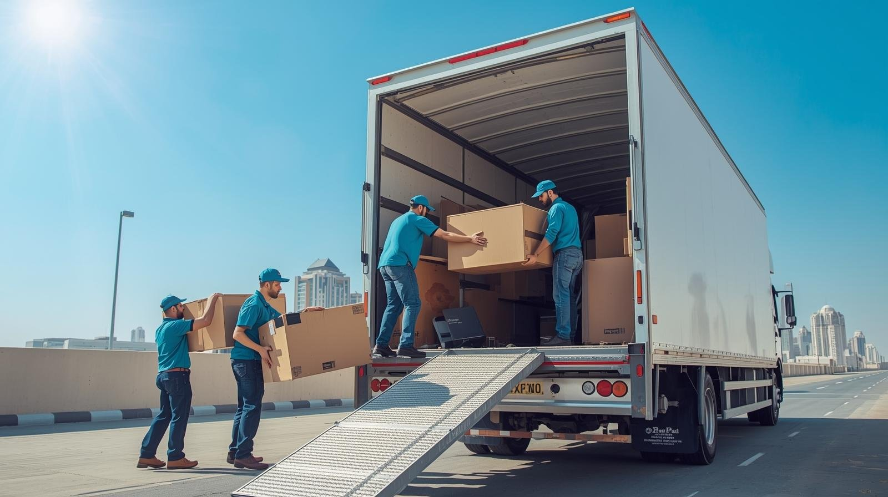

نقل عفش بالرياض باكستاني حراج | 0559865517

تعتبر خدمات نقل عفش بالرياض باكستاني حراج من أكثر الحلول انتشارًا بين العملاء نظرًا لما تتميز به من خبرة وكفاءة عالية في فك وتركيب ونقل الأثاث بأمان تام، ويحرص العمال الباكستانيون على إنجاز المهمة بسرعة ودقة باستخدام أدوات حديثة وشاحنات مجهزة تضمن سلامة العفش من أي تلف، ولأن اختيار الشركة المناسبة هو سر نجاح عملية النقل، ننصحك بالاعتماد على شركة نقل الرياض التي تقدم خدمات احترافية بأسعار تنافسية وعروض مميزة عبر حراج الرياض، لا تتردد في التواصل معنا الآن واحجز خدمتك بسهولة لتجربة نقل مريحة وآمنة دون عناء.
نقل عفش بالرياض باكستاني حراج بأسعار تنافسية وخدمة سريعة
تبحث الكثير من الأسر والأفراد عن خدمات نقل عفش بالرياض باكستاني حراج لما تقدمه من أسعار تنافسية وخدمة سريعة تلبي احتياجات العملاء بأعلى مستويات الجودة، يعتمد العمال الباكستانيون في هذا المجال على خبرتهم الطويلة ومهارتهم في التعامل مع مختلف أنواع الأثاث، سواء كان كبير الحجم مثل الأنتريهات والأسِرّة أو قطعًا صغيرة وحساسة تحتاج إلى عناية خاصة، ومن أهم ما يميز هذه الخدمة أنها متاحة عبر حراج الرياض، حيث يمكن للعملاء اختيار الأنسب لهم من بين العروض المتعددة التي تجمع بين السعر المناسب والكفاءة العالية، كما أن سيارات النقل المجهزة وأدوات التغليف الحديثة تساعد على ضمان سلامة الأثاث أثناء عملية التحميل والتنزيل، مع توفير الوقت والجهد على العميل.
وتتميز خدمة نقل عفش بالرياض باكستاني حراج أيضًا بالالتزام بالمواعيد والدقة في إنجاز العمل، مما يجعلها خيارًا مثاليًا للعائلات والشركات على حد سواء، وإذا كنت تبحث عن تجربة نقل سهلة ومريحة، فإن شركة نقل الرياض توفر لك حلولًا متكاملة في مجال النقل بأسعار معقولة وخدمة سريعة تلبي توقعاتك، لا تتردد في التواصل معنا الآن لحجز خدمتك والاستفادة من أفضل العروض عبر حراج الرياض.
مميزات الاعتماد على عمالة باكستانية في نقل العفش بالرياض
الاعتماد على عمالة باكستانية في خدمات نقل العفش بالرياض يوفر العديد من المزايا التي جعلت الكثير من العملاء يفضلونهم، ومن أبرز هذه المميزات:
- خبرة عالية: مع خبراء شركة نقل الرياض ستحصل على عمالة باكستانية مدربة تمتلك خبرة طويلة في فك وتركيب ونقل الأثاث باحترافية تامة.
- الالتزام بالمواعيد: نضمن لك وصول فريقنا في الوقت المحدد وإنجاز المهمة بسرعة وكفاءة لتجربة خالية من المتاعب.
- حماية العفش: نعتمد على أدوات تغليف متطورة وسيارات مجهزة للحفاظ على الأثاث من أي خدوش أو تلف.
- أسعار تنافسية: تقدم شركتنا خدمات نقل عفش بالرياض باكستاني حراج بأسعار مناسبة تراعي احتياجات جميع العملاء.
- قدرة بدنية عالية: العمالة الباكستانية لدينا تتميز باللياقة والقدرة على حمل الأثاث الثقيل بأمان وسرعة.
- خدمة عملاء مميزة: فريقنا جاهز دائمًا للرد على استفساراتكم وتلبية طلبات العملاء على مدار الساعة.
مع شركة نقل الرياض ستحصل على خدمة موثوقة، سريعة، وبأفضل الأسعار لتجربة نقل عفش مريحة وآمنة.
خطوات طلب خدمة نقل عفش بالرياض باكستاني حراج بسهولة
أولًا يجب التواصل مع شركة نقل الرياض لتحديد الموعد المناسب وفقًا لجدولك الزمني، بعد ذلك ترسل الشركة مندوب لمعاينة الأثاث وتحديد السيارة المناسبة لحجم العفش، ثم يتم الاتفاق على سعر مناسب لخدمة نقل عفش بالرياض باكستاني حراج يشمل جميع التفاصيل، تقوم الشركة بتجهيز العمالة الباكستانية مع الأدوات اللازمة للتغليف، واختيار السيارة المناسبة لنقل العفش، يبدأ فنيين الشركة بفك الأثاث بطريقة احترافية وتغليفه بأجود أنواع الخامات مثل الكرتون المقوى الفقاعات الهوائية لضمان وصول العفش دون حدوث خدوش أو صدمات به، يتم نقل العفش في مكانه الجديد وتقديم خدمة ما بعد النقل مثل تنظيف المكان في حالة طلب العميل ذلك، مع هذه الخطوات البسيطة، تضمن لك شركة نقل الرياض تجربة سهلة وسريعة دون أي عناء.
لماذا يفضل الكثيرون نقل عفش بالرياض باكستاني حراج؟
يفضل الكثير من العملاء خدمات نقل عفش بالرياض باكستاني حراج لأنها تجمع بين الخبرة والاحترافية من جهة، والأسعار التنافسية من جهة أخرى، فالعمالة الباكستانية تتميز بمهارتها العالية في فك وتركيب الأثاث والتعامل مع مختلف أنواعه بعناية ودقة، مما يقلل من احتمالية تعرضه لأي تلف أو خدوش أثناء النقل. إضافة إلى ذلك، يشتهر العمال الباكستانيون بالسرعة في الأداء والالتزام بالمواعيد، وهو ما يجعلهم خيارًا مثاليًا لمن يبحث عن خدمة سريعة وموثوقة لأننا افضل شركة نقل اثاث بالرياض.
كما أن هذه الخدمات متوفرة عبر حراج الرياض بأسعار مناسبة تناسب ميزانية مختلف العملاء، سواء للأسر أو الشركات، مع إمكانية الاستفادة من العروض المميزة، ومن أبرز الأسباب التي تدفع الكثيرين للاعتماد عليهم أيضًا قدرتهم على التعامل مع الأثاث الثقيل بكفاءة عالية، إلى جانب مرونتهم في تلبية طلبات العملاء. لذلك، إذا كنت تبحث عن تجربة مريحة وآمنة، فإن شركة نقل الرياض توفر لك أفضل خدمة نقل عفش بالرياض باكستاني حراج وخدمات متكاملة تجعل عملية النقل أسهل مما تتخيل.
اسعار وخدمات نقل عفش بالرياض باكستاني حراج
تتنوع أسعار وخدمات نقل عفش بالرياض باكستاني حراج بحسب حجم الأثاث المراد نقله والمسافة بين الموقعين والخدمات الإضافية مثل الفك والتركيب أو التغليف. وبشكل عام، تعتبر هذه الخدمات اقتصادية وتناسب مختلف الميزانيات، خاصة مع وجود عروض تنافسية عبر حراج الرياض، ومع ذلك، يبقى الاختيار الأمثل هو الاعتماد على شركة نقل الرياض التي توفر لعملائها باقات شاملة تشمل المعاينة، الفك، التغليف، النقل بسيارات مجهزة، ثم إعادة التركيب في الموقع الجديد بأعلى معايير الأمان، كما تلتزم الشركة بتقديم أسعار عادلة وخدمة سريعة، مما يجعلها الخيار المثالي لكل من يبحث عن الجودة والموثوقية في خدمات نقل العفش داخل الرياض.
نصائح لضمان سلامة الاثاث عند النقل مع عمالة باكستانية بالرياض
أولًا: قم بتغليف الأثاث جيدًا باستخدام الكراتين وورق الفقاعات لحماية القطع الحساسة من الكسر والخدوش.
ثانيًا: احرص على فك الأثاث الكبير مثل الدواليب والأسِرّة لتسهيل عملية النقل وضمان سلامته.
ثالثًا: اختر شركة نقل الرياض التي توفر عمالة باكستانية محترفة وخبرة عالية في التعامل مع مختلف أنواع الأثاث.
رابعًا: ضع القطع الصغيرة والأكسسوارات مثل المسامير في أكياس مخصصة مع ملصقات لتسهيل إعادة التركيب.
خامسًا: تأكد من أن النقل يتم عبر سيارات مجهزة تضمن ثبات الأثاث وسلامته أثناء الطريق.
أفضل شركة نقل عفش وادي الدواسر للسعوديين
الاسئلة الشائعة عن خدمات نقل عفش بالرياض باكستاني حراج
ما هي مميزات خدمات نقل عفش بالرياض باكستاني حراج؟
تتميز بالخبرة في فك وتركيب الأثاث، السرعة في الإنجاز، والأسعار التنافسية التي تناسب مختلف العملاء.
كم تكلفة نقل العفش مع العمالة الباكستانية؟
الأسعار تختلف حسب حجم الأثاث والمسافة، لكن تبدأ من خيارات اقتصادية مثل نقل عفش بالرياض 200 ريال.
هل خدمة نقل العفش متوفرة في جميع أحياء الرياض؟
نعم، تتوفر خدمات النقل في مختلف الأحياء بما في ذلك شمال الرياض، مع إمكانية حجز مواعيد مرنة.